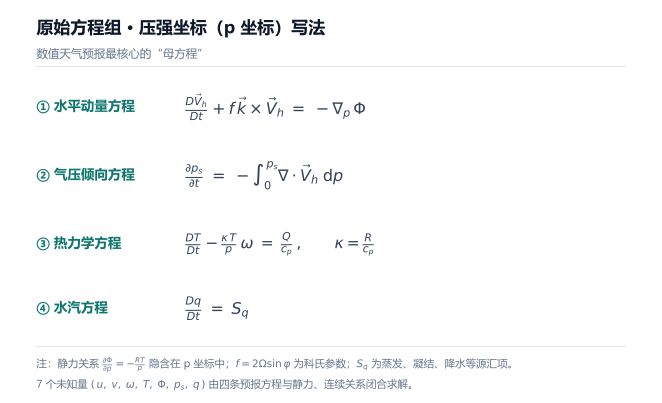
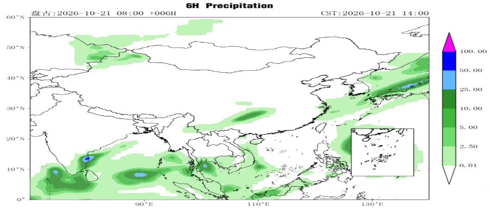
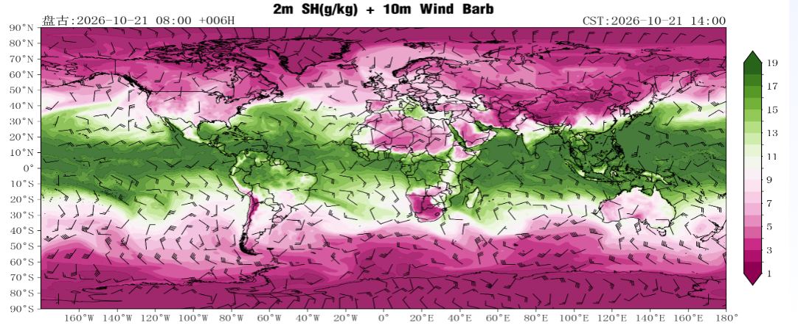
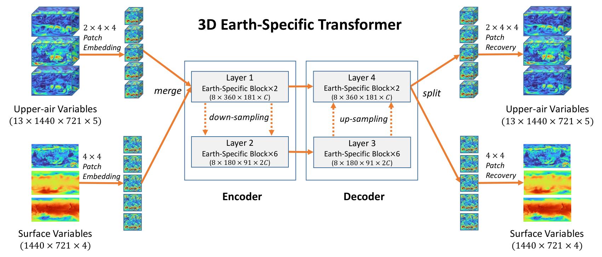
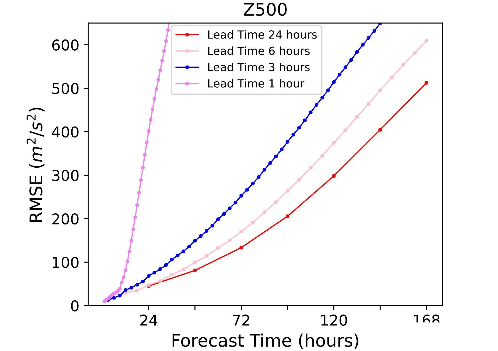

关于 AI4Weather 的见解
引言
2024年初，我在某地方气象局客户现场，与客户探讨气象模型需要做出什么样的效果，客户提出第一版盘古气象模型的痛点：不支持区域级别精度的预报；预报时间分辨率只有6小时，小于6小时的预报准确率低；输出的数据异常，存在锯齿状图块和空块现象。这是我接触盘古气象模型的开始，也是深入了解气象行业的开始。
接下来的一个月时间，我翻阅了南信大的气象教材，反复看了气象大模型的培训视频和阅读论文，从云的视角慢慢转向以行业视角看待气象行业的业务问题。经过反复的阅读和与专家的交流，在接下来的1年内深度参与了国内多地市气象大模型的拓展落地工作，在此分享一些对AI+气象预报场景的粗浅认识。
什么是天气预报业务
天气预报分类
短临预报
短临预报没有严格定义，学界引用的较多的定义是时长在0~6h或0~12h的预报，当前以雷达、卫星等分钟级的观测数据为主要参考依据，雷达回波外推是主要技术路线。短临预报关注的时间段短且临近，因此难点在于如何预报得“又快又准”，这也是气象学界的世界难题。
从机理上看核心难点大致有以下几点：小尺度对流系统生消演变快，生命周期常常小于30min，观测得到的初值误差影响极大；国内的气象雷达数据更新频率在3~6分钟，但雷达回波资料同化的“质控-同化-输出”全流程最快也需要在 5–10 min 完成；表示中小尺度过程的数据空间分辨率一般为0.1°（约1km x 1km），无法被全球模式（0.25°，约30km x 30km）解析，必须依靠 1 km 对流可分辨模式，计算量巨大；外推模型通常假设“回波强度不变”或“线性移动”，对新生单体、合并分裂处理差，2 h 后预报技巧迅速下降（可以简单理解为准确率迅速下降）。也正是因为这些难点，短临预报演变出 0–2 h 主要靠外推、2–6 h 为观测-模式融合、6–12 h 靠快速同化刷新的复杂预报模式。
中期预报
中期预报常见定义是预报未来3~15天的天气，以数值模式和全球资料同化为主，该过程耗时小时级，业界权威的欧洲中期预报中心每6小时提供一次预报结果。中期预报的时段跨度大，但实际业务中通常关注5天内的预报结果，预报难点专为如何“更准”。
从机理上看核心难点大致有：误差来源从“初值”转向“模式物理”，对流参数化、云-辐射反馈、重力波拖曳等误差随积分时间指数放大；5–7 天后逐日天气难以预测，只能给“集合概率”或“天气型”趋势，具体现象为活跃度等指标在5天后迅速下降；由于数值模式的参数化设置，热带气旋、阻塞高压等关键系统位置/强度误差达到 100–300 km，直接影响极端事件预警，具体表现为天气预报中的台风路径每天都在变化，甚至可能出现路径“拐弯”的现象；集合预报时成员数量受超算算力限制，对极端情况模拟采样不足。因此，我听许多预报员都调侃“5天以外的天气预报基本不准，也就比瞎猜好一点”。
次季节预报
次季节预报定义为预报未来15~60天的天气，主要以耦合海、陆、冰、植被等慢变要素的数值模式实现。次季节预报关注的是长时段的平均概率异常，因此大气初值带来的影响已经近乎消失，预报难点变成了能否把慢变要素的影响和不同的气候现象的变化概率都考虑全面。同时，“概率异常”的概念较难理解，相关产品的落地和应用挑战较大。
从机理上看核心难点大致有：处于大气初值记忆已耗尽，而海洋/陆面边界强迫尚未充分起效的尴尬时段，因此物理约束的设定非常难；慢变边界条件（如土壤湿度、积雪）观测稀疏，初值误差 10–30 %，将直接限制 30 天以外的预报技巧；概率异常分辨需要的样本多，50个集合成员以上的样本才能分辨 10 % 级别的概率异常，计算与存储成本极高；MJO（热带大气低频振荡） 传播速度、位相转换误差大，导致遥相关型（如欧亚阻塞、非洲赤道降水）预测失败。
总之，现代气象业务需要将不同时段的天气预报分类，本质上是受研究范式的约束，无法统一不同时间和空间的特征。在数值模式下这个现象非常明显，三种预报都需要对公式进行参数化，因此在预报前就可能天生带有系统性误差；数值模式本质上就是不断的用n时刻计算n+1时刻的天气情况，因此都会出现“误差随时间放大”的现象，只是研究对象的不同会导致表征不同。而AI4Weather范式的出现，让统一不同的时空特征的技术路线增加了，只是当前远远没到这个阶段。
天气预报范式：数值预报与AI4Weather
现代化气象预报技术指的就是数值天气预报，2022年以前这就是主流的天气预报范式。数值预报以高性能计算（HPC）为核心，求解天气预报问题的复杂方程组。该方程组包含了7个未知量，本质上是将天气预报问题抽象为地球表面、云和太阳等实体之间的物理过程和相互关系，并用流体力学和热力学方程组进行描述。

上面是原始方程组的压强坐标写法，也是目前数值天气预报最核心的“母方程”，四条公式分别对应了大气运动过程中的水平动量、压强倾向、热力变化和水汽变化。各种不同的天气预报模式都由这个方程组演化而来，例如短临预报要加入可压缩非静力项，中期预报要将去掉垂直加速度进行静力近似、积云对流要进行参数化等。
数值天气预报方法的复杂度高，这也是它发展局限性的根本原因。算法复杂度高，因此对HPC算力的要求大，单个超算集群至少数千核；大气是个整体的混沌系统，每次预报都要考虑全球的天气情况，因此数据量大，单次预报花费数小时；只计算区域局部天气的模式也必须参考全球背景信息，局部数据的分辨率通常比全球模式高，相应的数据量指数级增长，因此在该范式下要做高区域分辨率预报的代价极大；数值天气预报的门槛高，要求对流体力学、热力学等非常难的学科有较好的掌握，数据同化也是对算力和科研人员专业能力要求较高的技术。在这些挑战的综合影响下，数值天气预报的范式目前的发展已经到了瓶颈期。
2022年后，盘古气象团队发布的《Accurate medium-range global weather forecasting with 3D neural networks》登上《Nature》正刊（预印本详见https://arxiv.org/abs/2211.02556），标志着以AI为核心的新型天气预报范式已基本达到可用。国外学者在2018年已经开始研究AI气象预报，但限于当时的主流AI架构并非transformer，预报效果离可用的差距较大。2022年到2025年，国内的伏羲、风乌等模型相继问世，且不断的进行调优迭代，当前已经与顶尖的数值天气预报整体持平，部分领域超越。
AI4Weather范式从原理上看，就是投喂大量历史数据，让模型学习历史的天气变化规律，再根据当下背景信息推理预报后续的天气情况，具体的技术细节分析后面章节展开论述。
个人认为，AI4Weather带来的改变是大幅降低了算力消耗和预报延时，可以灵活地提高预报的时空分辨率，同时不再要求对流体力学和热力学的掌握非常深入，综合来看大大降低了初期的研究门槛。
在实际验证过程中，AI气象模型在台风路径、寒潮、热浪等极端天气预测场景相对于数值模式展示出了一定的优越性，当下数值模式和AI模式双路线发展已经成为了气象学界的共识。
如何快速判断近期天气情况（看懂地面分析场类产品）
从业务视角出发，预报员每次做天气预报都需要看三类产品图：地面分析场、热力类、动力类。
地面分析场：观测 / 预报高度集中在 “地面至 10m 内”，要素通常包含气压、温度、风三个关键近地面要素。主要用于快速判断近地面天气系统（如高压、低压、锋面）和天气现状（晴、雨、干、湿）。
热力类：用于判断大气是否“有能量’‘、”够潮湿“，这两个要素是降水、强对流等天气发生的前提条件。
动力类：用于判断大气“怎么动”， 在热力条件充足的情况下，再看动力条件是否具备，以此进一步判断是否会触发新的天气过程（如降水）。
热力类和动力类的预报产品对可解释性要求较高，在做研究、验证物理过程等工作中应用更多，当前可解释性是AI气象模型的短板，项目落地中也较少参考。地面分析场类产品与降水、大风等常见天气联系更密切，这里做一个简单介绍。
看懂降水分布
降水分布图主要看量级、形态、落区。在图例中可以看出降水的量级，通常颜色越深降水越多；形态和落区都要与实况图对比。在下面这个预报案例中，形态上是双强中心的东北-西南向窄带状雨带。

我们生活中看天气预报有时候会觉得不准，是因为确定性预报出现误差是非常常见的，量级、形态、落区都有可能出现误差，因此需要预报员根据经验判断哪种模式在哪种场景下更准，再作出最终的天气预报。此外，粗分辨全球的数值模式预报难以精确预报小范围区域，需要更高分辨率的区域数据支撑才能提高预报准确率。
看懂多要素协同分析图（2m比湿+10m风场示意图）
主要原则就是先看等压线，再看颜色，最后看风向。

上图是比湿和风场的产品样例。颜色越深的区域湿度越大，主要关注绿色与红色的快速突变区，这部分代表了干湿边界，可能是锋面、季风辐合带等天气系统的位置，结合风向可以判断水汽的转移趋势；风矢的横杠代表了风速，风速越大横杠越多，风杆则代表风的朝向。
如果是三要素的图，则要先判断等压线密集或稀疏处可能出现的天气过程，这部分对气象领域的专业知识要求相对高，不再深入举例。
解读盘古气象大模型
前面介绍了天气预报场景的基本知识，下面就讲一讲我对盘古气象大模型的认识（PS：盘古气象和盘古NLP是同一品牌下的不同模型，技术路线和开发团队也不一样）。
盘古气象的公开论文与技术材料中，主要提到四个技术创新点：适应地球坐标系统的三维神经网络（3D Earth-specific transformer，简称 3D-EST），层次化时域聚合策略，绝对位置编码策略和全球-区域模型嵌套。这几个技术创新点在论文中都有写到，下面是我的个人理解。
适应地球坐标系统的三维神经网络
气象数据是三维的（经度、纬度、高度），因此盘古气象团队将传统的二维神经网络改成了三维的结构，以适应气象数据的三维格式。基于2D神经网络的方法在处理气象数据时存在三维数据处理不足的瓶颈，气象数据是三维的，且分布不均匀，而2D神经网络难以有效捕捉这种空间异质性。三维神经网络架构让模型无需对三维数据进行处理，保证了数据信息量。

图源：Pangu-Weather 论文（Bi et al., arXiv:2211.02556）
从图中可以看出，模型的输入与输出均为三维气象数据，神经网络结构包含了下采样与上采样两个部分。在下采样过程中，模型通过合并相邻的格点数据，逐步降低空间分辨率，从而在不同层次提取不同尺度的气象特征。具体而言，浅层网络主要捕捉小尺度的天气变化特征（如局地对流、短时降水等），而深层网络则关注相对大尺度的气象演变（如中尺度系统、锋面过程等，注意这里是“相对大尺度”而不是“大尺度”）。这种多尺度特征提取机制使得模型能够在不同层次上聚焦于与其任务相关的空间尺度，从而提升预报的准确性与物理一致性。
绝对位置编码策略
在损失函数里引入Earth-Specific位置编码，帮助AI模型识别出不同绝对地理位置的差异信息。气象预报数据和普通图像数据最大的区别在于，特征图上的每个像素都对应于地球上的一个绝对位置，而图像上的像素往往只包含相对位置信息。同时，气象要素数据对应的经纬度网格是不均匀的，而不同的要素在不同纬度、高度的分布也是不均匀的。对这些不均匀性的建模，有利于学习气象数据背后潜藏着的复杂物理规律。
层次化时域聚合策略
训练数个独立的子模型，分别处理1小时、3小时、6小时等预报间隔。每个子模型专注于特定时间步长的预测，避免了传统递归模型中单一模型处理所有时间步长的复杂性和误差传递。训练数值模式中是以迭代的方式计算下一时刻的天气信息的，AI范式的模型使用的算力精度是FP16/FP32的，本就不及HPC，用迭代的方式误差累积会更大，因此层次化时域聚合策略在减少误差上是有非常大优势的。

图源：盘古气象团队公开分享材料
全球-区域模型嵌套
顾名思义，在全球模型内嵌套区域模型，即区域边界及边界外的信息可通过全球模型的预报结果获取，这也是数值模式为降低区域级预报资源消耗的经典方法。区域模型与全球模型在物理上本质是不同的，全球模型是建立在球面上的，而球面是有限无界的，即全球模型的边界问题从物理上看是可避免的；但区域模型描述的区域是存在东西南北边界的，在预报过程中，需要考虑东西南北区域边界外的气象场对区域边界内的气象场的影响。
此外，在项目实际落地过程中，还可以对全球-区域模型做一系列工程化联合调优（如边界衔接处理、区域时空权重设计和差异化损失函数等），这些方法都可以有效提升预报准确率。
实际落地效果
论文和PPT里的内容讲起来都很高大上，但最终还是要用实际使用效果说话。
这里参考南部沿海某特大暴雨的公开报道案例。
这个案例中的特大暴雨是暖区暴雨。暖区暴雨的本质是暖湿气团自驱动的“内禀性强降水”（可以不严谨的理解成大量高能量水汽从海上涌向大陆造成的降水），特点是降水效率极端且夜间高发，常发生于温带气旋暖区的暖锋后、冷锋前，无冷空气直接触发，依靠暖湿气流自身动力抬升形成的暴雨。这种暴雨的预报难点是突发性强且气象雷达无法探测（短临预报模式失效）、时空尺度小（全球数值模式很难预报出来）、卫星观测常被云层遮挡（资料同化也来不及），但是盘古实打实地把降水的落区和强度都提前预报了出来，这是当前数值模式无法做到的。其他准确预报台风路径和极端降水的例子也挺多的，这里不再列举。
当然也要正视盘古气象的缺点，比如台风强度预报总是偏弱等，但盘古气象相对数值模式的优点是进一步优化的成本更低，相信它距离成为“六边形战士”的日子已经不远了。
现在的数值模式和AI气象模型各有问题，但总体预报水平是相当的，因此预报员通常采用类似“台风路径看AI模型，强度看数值模式”的方法做预报。AI气象模型作为数值模式的补充，对于预报员来说是非常有价值的。
业界AI气象模型对比
说完盘古气象，再来看看国内的其他模型（国外的模型在国内项目中很难遇到，而且业务化运行的实测数据不多，这里不多讨论）。这里可以参考中国气象局预报司的官方的气象模型榜单http://aimfdp.nmc.cn/。
这个榜单上从25年3月开始（2月以前跑的都是盘古22年的开源版本，参考意义不大），基本上就是盘古和伏羲霸榜。伏羲对各个要素预报的整体准确率更高，盘古在关键指标和降水上优势明显。现在处于第二梯队头部的风乌模型近期迭代明显放缓，偶尔能到榜首的璞云与伏羲的技术路线高度相似，因此基本可以判定盘古和伏羲就是AI气象模型最好的模型。下面讲一讲风乌、伏羲的技术细节，可以与盘古的技术路线进行对比。
盘古
架构详见上一章，这里补充一些信息：盘古的模型参数约0.2B，神经网络有16 层（Encoder 8 层 + Decoder 8 层）。
盘古使用的激活函数是 GeLU。优点是GeLU 在反向传播时梯度更稳定，能缓解“梯度消失”，在 16 层这种中等深度下仍可保持较快收敛；输出分布接近 N(0,1)，可减轻层间协变量偏移，训练时权重更新方向更均衡，收敛速度快。
伏羲
伏羲的参数量约为4.5B（该团队有训练更大规模模型的计划），架构是U-Transformer，由一个下采样块、48个重复的Swin-Transformer-V2 块和一个上采样块构建，沿用图像类模型的训练架构，这点与盘古的思路有异曲同工之妙，本质上都是对图像类模型架构的优化。
伏羲使用的激活函数是 Sigmoid。优点是输出天然落在 (0,1)，可直观解释为“激活强度”或“降水概率”，便于与物理阈值后处理对接；配合48层深网络可捕获多尺度大气相互作用，对台风眼墙、锋面等强非线性系统拟合能力更强。
“级联”预报策略：先微调模型在前20个时间步上的表现，得到FuXi Short；冻结了模型参数，再将Fuxi Short的输出作为输入，微调模型得到Fuxi Medium，期间所有输入都是Fuxi Short的输出而不是观测。同理得到FuXi Long。最后，三个模型在预报时负责各自的时间段。这个预报策略与层次化时域聚合策略的目的相同，都是为了降低因为迭代导致的预报误差。
解码前加噪：训练时加入不同类型的噪声再解码，模拟初始场不准确的情况，使模型具备一定的初始场修正能力。推理时同样可加噪，达到集合预报的效果。
基于这个技术，伏羲后续版本中正式加入了集合预报版本（榜单上的版本没有应用），训练时加入初始扰动，模拟天气的不同变化方向，同时训练128个预报成员，与目标数据对比择优后再得到最终预报结果。天气预报本质上就是预报概率，集合预报可以考虑更多的事件发生概率，再次提高了模型的预报准确率。
风乌
风乌模型的架构是跨模态Transformer，由不同气压水平的不同大气变量作为不同的模态，使用模态特定的编码器处理不同的变量，每个变量的未来状态在跨模态Transformer之后进行分别推导。
“Replay Buffer”（缓存回放）：风乌在训练的第一阶段的输入都是观测数据；第二阶段将模型的预报数据放入缓存区，接下来模型的输入有一定概率换成预报数据。第三阶段再重复上述步骤，训练更长时间的预报，如此不断累加步数。 风乌的每次训练均只预报下一时次，只是输入的来源不同，离起报时间的距离不定。这个技术点与伏羲的级联预报策略基本是一致的，不再做分析。这种方式的优点一是从工程上充分利用了资源，节省了训练规模；二是当输入不够准确时，模型也能提供更准确预报的能力。风乌可能学习出了与与下一时次有显著关系且性质稳定的特征，这种做法能减少了模型对输入的误差的敏感度。
中国气象局 风清、风雷、风顺
前面提到的几个模型都是侧重应用的，采用的都是数据驱动的范式，专注于提升中短期预报的准确率。而中国气象局的模型更侧重研究，定位是补位AI气象预报模型的物理可解释性、强对流天气短临预警、长时间大尺度气候现象三大研究方向。
风清
中国气象局与清华大学研发，主攻 3-10.5 天全球大尺度形势，强调“物理可解释” 。风清模型与其他模型不同的地方在于强物理表征的架构设计、哈密顿守恒系统构建——其他模型都是直接在3D/4D 网格上做外推，而风清将大气演变的守恒律、热力学/动力学方程等物理约束编码进了损失函数中，使模型在推理的每一步都能对应到真实的物理过程，从而提升“物理可解释性”。然而在官方榜单中，风清模型的表现仅在第二梯队。与多位专家讨论后猜测：或许与现有气象预报公式中人为定义的参数干扰了模型的效果。
风雷
中国气象局与清华大学研发，模型架构也是48个重复的Swin-Transformer-V2 块，用“级联预报”方式分别训练出0-12h、12-24h、24-36h模型，可以认为与伏羲是同一技术路线。
风雷的输入数据来源相对业界许多模型都要更丰富，包括多普勒雷达（S/C/X）、FY-4A 卫星、风廓线、GNSS-ZTD、自动站等数据，其中许多数据是非气象局体系难以获取的。训练策略上，风雷用随机旋转、强度拉伸、雷达遮挡模拟进行增强训练，损失函数采用纬度加权 MSE + 临界成功指数 CSI-loss。CSI-loss是面向“命中-漏报-空报”三类的分类损失，把它嵌入到雷达回波/降水像素级回归里，相当于让模型同时优化“强度误差”和“空间命中形状”。
在2025年全国数值预报技术交流会上的会议报告中提到，风雷与ECMWF-IFS-4 km和CMA-SWIFT-1 km对比，所有指标至少有5%以上的提升。
但以我浅薄的认知来看，风雷的预报可用性还有待提高——一是当前大多数地方气象局更多参考SWAN3.0（CMA-SWIFT-1 km的上一代），很多地形复杂的区域，该模式的预测准确率离可用还有较大差距；二是该报告中的分值绝对值本身就较低，5%的提升对于应用来说可能意义有限。当然这也是短临预报的核心难点，有提升总是好的。（PS：25年盘古短临气象模型在部分地方气象局的试点相对SWAN3.0也有5%以上的提升，这方面能力相差不大，但也从侧面证明”世界难题“是真的难）
风顺
中国气象局与上智院李昊老师团队研发，依然沿用了伏羲模型的技术路线。
核心差异是风顺把神经网络深度加到了64层，损失函数里加入了 10-80 d 带通 MSE。10-80 d 带通 MSE本质上就是引入了MJO 频段损失，这是次季节预报的核心影响因素；神经网络加深是为了解决 慢变信号稀释、频域保真不足、气候吸引子漂移 三个瓶颈。
神经网络加深：在气象模型中，神经网络的感受野由窗口长度x模型层数决定。transformer的每一层能感受的时间长度由窗口长度决定，从业务角度出发，时间窗口设置为24h，这样才能学习到每日的天气变化。为了能覆盖次季节60d的长度，将模型设置为64层刚好可以覆盖这个时间跨度。但是网络深度加深会带来反向传播时梯度消失的问题，因此在反向传播时对应把同一距离拆成了多段的小残差，从而规避这个问题。
损失函数加入 10-80 d 带通 MSE：在32-40层中间插入10-80 d 带通 MSE，起到频域保真的作用，因此也可以叫频域保真层。在工作报告中提出，对比无滤波和把滤波器放到后面的层数，30-60d的功率谱误差降低了22%，MJO 传播速度误差降低40%以上。原理是把损失放在中段特征层，就会要求所有前面层都生成“干净”的 45 d 信号，否则无法通过中段的滤波器，进而提升模型的准确率。
数值模式对比
在业务拓展的过程中与一线气象从业者交流，经常会被问到一个问题：国家投入那么多钱做数值模式，AI气象模型又越来越准了，为什么还需要专家研判？我认为有两个原因：
①前面提到数值模式的预报结果出现误差是常见的，甚至会出现“老气象专家出门看一眼，报的天气比所有模式都准”的情况（业内对极端情况的调侃）。此外，地形复杂、经济相对不发达的地区气象观测设备的覆盖率不够（也就是“观测稀疏”）导致缺乏数据，数据质控更是无从谈起，因此对于数值模式来说这片区域都是“模糊”的，所以会出现预报不准。所以天气预报的业务形态是 数值预报产品+专家研判/订正 的模式。
地市的气象局天气预报业务的大致流程是：从上级气象局接收数值预报的结果并结合本地的高精度数据进行可视化，再由预报员会商，研判预报结果的准确率，如果判断数据不准确还需要做人工订正，最后才会面向公众/企业发布。
②从核心职责来看，气象局要统筹气象监测、预报预警、服务应用和科研管理，要承担防灾减灾的社会责任压力。首先，综合数值预报系统和AI预报的不稳定表现，需要人为干预提高预报的稳定性；其次，减灾防灾的过程中，需要精准的专业判断、信息的快速传递、人力的紧密配合，每个环节都离不开懂气象、懂应急的专家。
因此，天气预报业务在短期内是无法脱离预报员的，AI气象模型只是给预报员提供了新的参考依据。
个人认为，AI气象模型相比数值模式，更多的变化是降低研究门槛、提高预报速度，让气象预报这个业务有新的发展路径；决策级天气预报的本质是预报天气发生的概率，提高准确率更多体现社会价值，并没有让天气预报完全准确，因此没有质的区别。但这并不是说准确率提升不重要，相反是因为它太重要了，即使无法百分比预报准确，不停地提升准确率仍然是值得的。
产业分析
本人并不是气象事业的从业者，也不是市场专家，因此本章将引用业界学者的观点和项目落地过程中的体感进行阐述。
这里要先声明一个前提，同时也是下面我个人观点的出发点——《中华人民共和国气象法》明确规定气象被定位为基础性公益事业，气象工作应当把公益性气象服务放在首位。
气象之所以是“事业”而不是“行业”，有四个原因：一是法律规定；二是气象服务具有典型的公共产品属性，可以试想若气象服务全部商业化对大量民众的影响有多大；三是基本气象服务是以公共利益为导向的，对盈利的诉求不高；四是气象事业由政府领导，国家近年来鼓励发展商业气象服务，但这也只是气象事业的市场化补充，并不是主体。
下面我们来看看气象商业市场的格局。
**气象服务商业市场小。**在《商业气象服务在精准化与产业链融合中的价值跃迁》中提到“预计2025年中国气象全产业链规模将超3000亿元”，乍一看市场空间相当大，但这里提的是“全产业链规模”，实际上将农业、能源、航空等行业都涵盖在内了，纯气象服务的市场规模是远小于这个数字的。在《2025年中国商业气象服务行业发展现状及趋势》中提到“2024年中国商业气象服务市场规模约为141亿元“，”产业链上游由国家主导，中游依赖数据融合与AI建模能力，下游聚焦能源、农业、交通等高敏感行业“，这里可以看出即便是商业气象市场，国家依然控制了产业链的供应，本人在项目拓展中也深刻感受到——气象服务最关键的高精度数据管控非常严苛，获取成本非常高昂。
**商业气象仍处于起步阶段。**2022年《中国商业气象发展的若干问题：从打破寄生状态开始》一文中指出”商业气象规模中约三分之二的气象业务是由相关下属单位的派生企业承担的“，前文提到2024年商业气象规模141亿元，因此实际上其他公司能参与的气象商业规模在2025年也才堪堪达到50亿元，同时气象局等能支配一定资金的单位大量资金来源都是当地政府，因此采购一个价格高昂的气象大模型对他们来说也是一笔非常高的成本，即使前期引导成功，客户也必然提出‘气象大模型要帮助我们突破XXX’的要求。此外，文中还提出“中国目前还没有典型的商业气象公司，所谓的商业气象企业则处于一种寄生状态，只是公益性气象事业的商业延伸”，这是我国气象事业定位带来的必然结果，例如华风爱科、玖天气象等较知名的商业气象公司，背后都是中国气象局体系在扶持；而地方上的商业气象市场，大多也是地方气象局的下属单位覆盖。因此，商业气象当前仍是公益性事业的延伸，且仍在起步阶段，非气象局体系的公司想要分一杯羹的难度是很高的。
单看商业气象市场空间，留给商业公司的空间很小，那把视角回到“3000亿元”规模的全产业链呢？近年来不少行业专家也在寻求“气象X行业”的合作，下面我从气象服务的意义出发探讨这个问题。
仍然引用《中国商业气象发展的若干问题：从打破寄生状态开始》中的观点——“在防御型商业气象中，只有在高影响低防御的行业，才存在真实的商业气象需求”。这句话指明了商业气象的发展方向，我们应该向零售物流、户外文娱、新能源发电等行业发力，但也隐含了一个关键信息，那就是随着气象技术的发展，气象商业的市场并不会高速发展——气象技术发展会带来更多永久性防御手段，因此“低防御”的行业范围会很窄，且没有扩张的趋势。
另外还有一个比较反直觉的观点——“气象对农业的物理影响很大，但经济影响却不大”。业内其实已有团队尝试在农畜牧业推广气象大模型，但是收效甚微，与从业者交流时他们认为这些行业的付费和能力弱，且精细化气象服务与公益性气象服务没有本质的区别，对于非大规模的农畜牧业主体来说，使用气象大模型的投入产出比非常低甚至可能亏本。从行业角度看，抗倒伏技术、错峰播种、农田水利建设等都是提升农业抗灾水平的手段，减少了对精细化气象服务的依赖性；国家气象局长期提供免费的农用天气预报和病虫害气象等级预警，覆盖率和实用性相当高，农牧民几乎没有使用成本；即使遭遇气象灾害，国家也有政策性农业保险和救灾补助，进一步减少了对商业气象的依赖。因此要在农畜牧业落地气象大模型，只能寻求与头部的几家大公司合作，且要与中国气象局体系的商业气象产品做出差异和明显优势，在这个行业中气象大模型的推广价值仍然较低。
再看行业合作的格局，盘古气象与伏羲两个SOTA的差距不大，两家模型在中国气象局都有采纳使用。从当前的能力水平来看，两者在全球中期预报的核心指标上已经与顶尖数值模式整体持平、部分要素互有胜负；落地到行业应用上，已经具备支撑短临预警、气象风险评估等场景开展试点验证的能力雏形，但距离独立支撑业务化运行还有一段距离。由此来看，在商业气象这块小战场上，盘古气象与伏羲的竞争仍然激烈，且由于能力上在客户界面难以拉开差距，厂商之间真正能比拼的更多是工程化落地能力。
综上，商业公司向市场推出产品必然带有商业目的，而由于国家对气象的基础性公益事业定位，气象模型在气象商业市场上的推广是吃力不讨好的；往新能源发电公司发力或许是较好的尝试方向，毕竟气象预报水平的提升可以实打实地给发电企业带来经济收益，但难点是气象预报水平的评价标准并不统一，要转换成功率预测指标再论证经济收益是有一定难度的。
写在最后
本文内容都是个人在气象大模型拓展中积累的浅薄认知，希望能给看到的读者带来一定帮助。
如果文章内容有误，请指正，共勉。